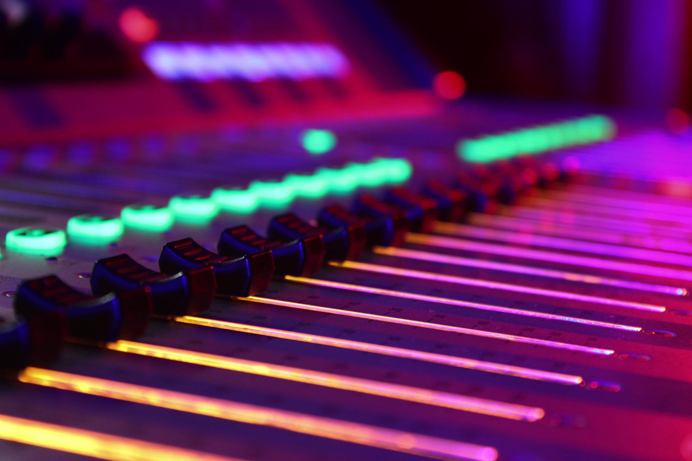
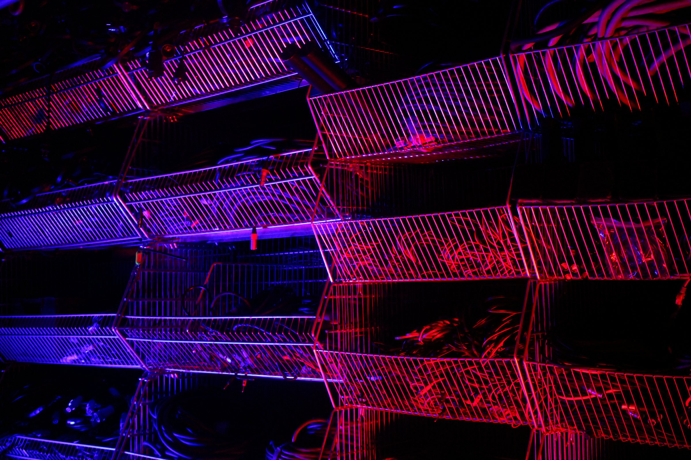
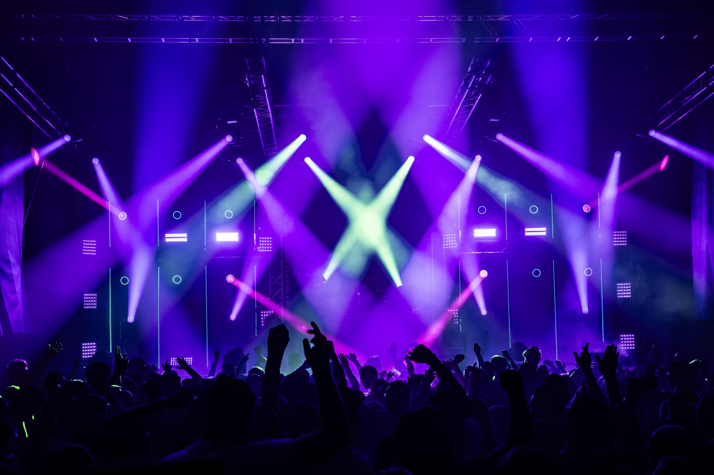
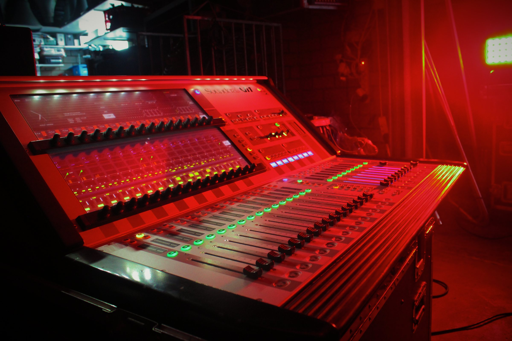
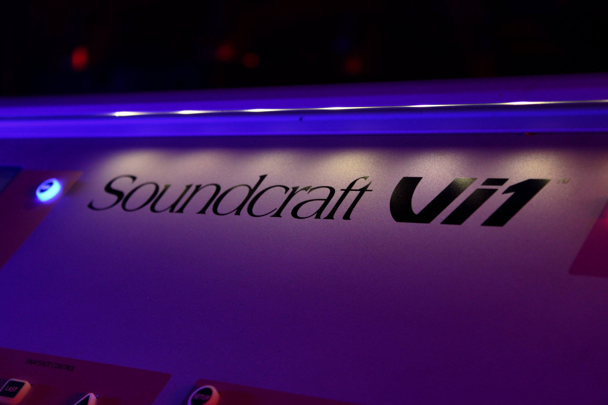
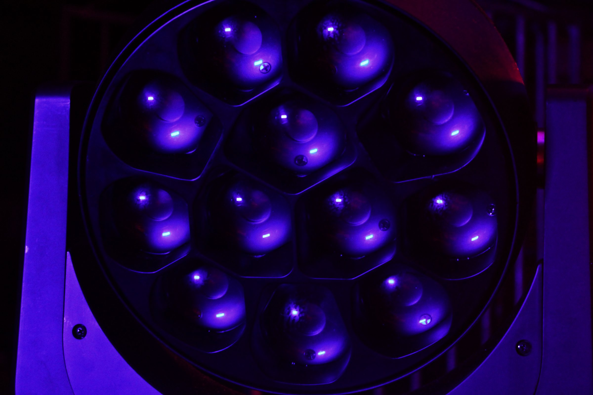
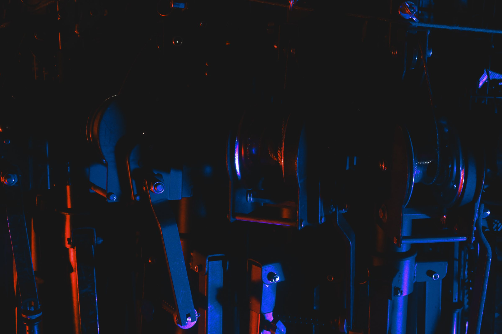
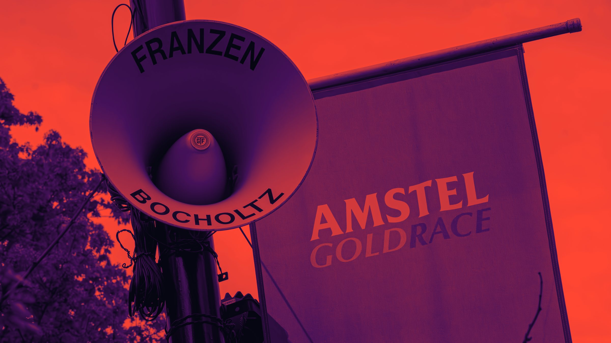
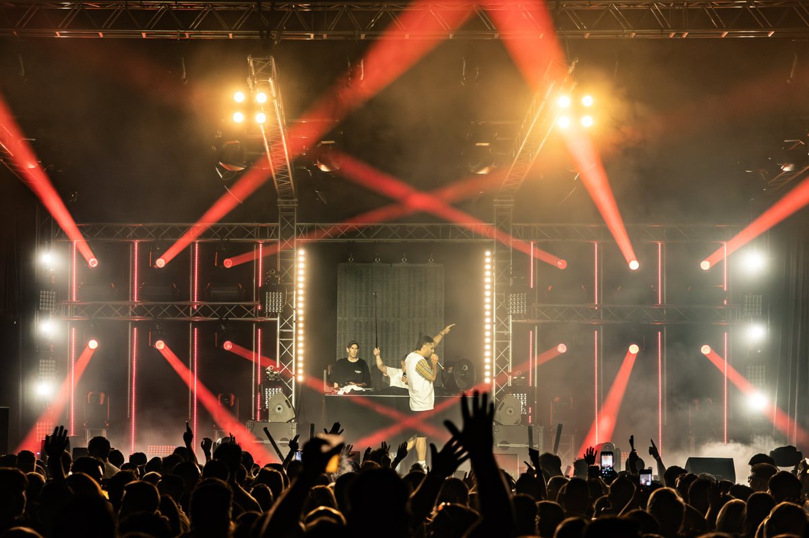

We make
it heard.
Sound, public address, lighting, video and power for events in the Netherlands, Belgium and Germany. With our own equipment and our own crew, from Bocholtz.
We have been doing this since the sixties. No one else in the region can say that. You get one point of contact, and that is the people who build and run your event.


Sound
From a marquee to a festival stage. Line arrays, monitoring and one of our engineers at the desk.
Read more →

Public address
100V public address across whole sites and race routes, with more than 300 horns of our own.
Read more →

Lighting
and video
Stage lighting, site lighting and LED walls. Designed for your programme and run live. For lighting design, LED and visuals we work together with MATRIX E.I.L. from Bocholtz.
Read more →

Power
and infra
Power plan, distribution across the site, truss and rigging. So everything keeps running all day.
Read more →
From our
warehouse
Almost everything we use is our own. It is also for hire, with or without a technician. Prices on request.


Work
ProjectsZLF
Power and infra, lighting, sound, video, site lighting and public address
2025
Amstel Gold Race
Public address along the course
2025 — 2026
Oud Limburgs Schuttersfeest
Public address across the site and on the jury vehicles
2024
Sportclub’25 · 100 jaar
Live production
2025BVV Kalk aan de Books
Live production
—CV De Pankes
Live production
—
Same name.
Same approach.
It started with home-built speakers and a van with horns on the roof. The equipment has grown, the way we work has not.
You talk to the people who will build your event. No account manager in between, no surprises on the day.
News
All news


Your
event?
Tell us what you have in mind. You will hear back from the people who will actually build it.
info@franzenbocholtz.nl